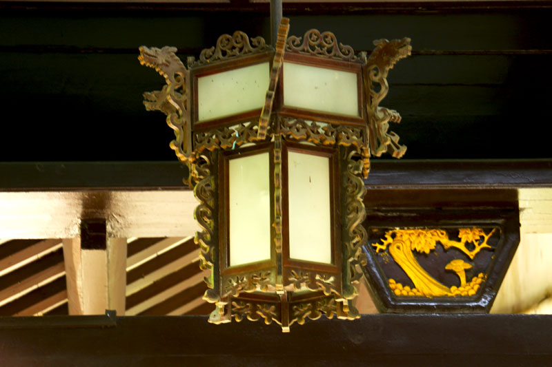
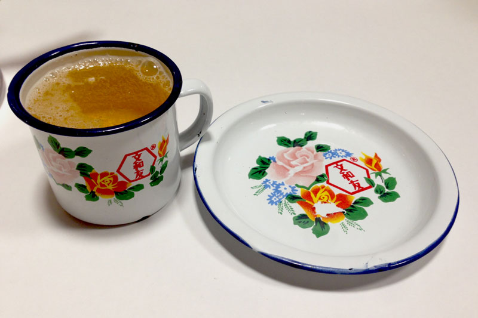
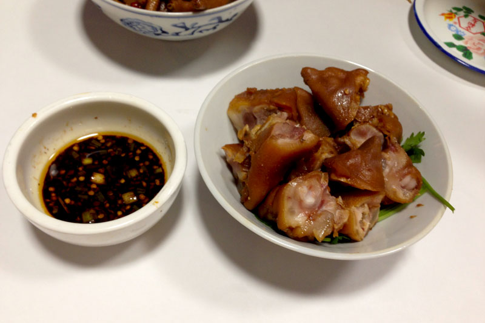
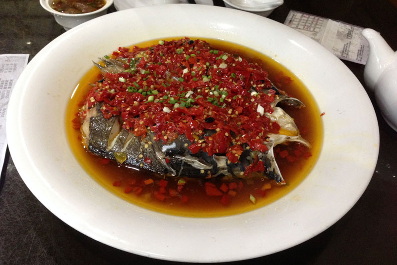

工作累了 压力大了 是时候来一场说走就走
任性&疯狂 才对得起这廿几岁
4月29日 5月的最后一个工作日
照常拖着疲惫的身体准备回住的地方
经过一同事位置 发现他在看旅游的信息
“准备去旅游？”
“看看51有什么地方好玩”
“喔 去哪？ 好地方我也去”
“看看吧”
就酱 这场长沙 就开始了
高铁 火车 住宿 路线 美食
三个小时攻略信息
该买的买好了 该plan的plan好了
就差第二日能不能早起的事情了
4月29日深夜
的确 生活充满着很多事与愿违的事情
一个项目的事情 一个打包的事情
就这样到了3点才躺上床
4月30日 早上5点半
带着强烈的困意还是起来了
洗漱 收拾 出门 步行 地铁 南站 取票
劳动节虽说只有法定三日
可是人还是很多
8:00AM 2.5h 站在了广州到长沙的高铁上
同时也见证着一场小规模的人类短期迁徙活动
平时广州回一趟佛山也基本需要2.5h 同样的时间能北上700多公里
想想也是奇妙
10:20AM左右 到达长沙南站
长沙的地铁现今就是一条过的2号线
穿过雨花 芙蓉 岳麓三个区 & 奇怪的数字2起始命名
首站 岳麓山
可是吃最紧要
于山脚找吃
所以就有了首站之前 午饭
看见了PizzaHut 看见了三汁焖锅
来到长沙吃这？
长沙作为湘菜的代表地 不可能不吃湘菜
岳麓区新民路 大碗厨 第一顿的湘菜
偏家常小菜 什么鬼牛肉 什么鬼黄鸭叫 还有一个香辣猪蹄
味道最好还是个猪蹄
黄鸭叫后来才知道原来是一种鱼
湘菜的辣和广东做出来的辣还是不一样的
我这种词穷得理科生看来 就是辣得干净利落
还有一个有趣的现象就是他们那边上饭是用保温瓶上的
在米饭的保温上不失为一个好办法
无知的我还以为是外带食物
1:30PM 左右
正式开始首站 岳麓山
岳麓山主要有两个门进
中午吃午饭的地方靠近东门 东门有缆车可上山
南门需要从湖大进去 较多的景点都是靠近南门
东门除了缆车就没啥好看的了 于是选择了南门进
公交经潇湘中路、牌楼路和麓山南路至湖大校园内
看见赫赫有名的毛爷爷像
看见有着湖南大学牌匾的建筑
看见湖南大学的图书馆

看见不明所以的一间自卑亭
毛爷爷像两旁都可登山
一条是登高路 正式的南门入口
一条是不知名道路 岳麓书院入口
岳麓书院进能比较方便去到著名的爱晚亭
于是就花了50大洋从岳麓书院上山了
岳麓书院是中国古代四大书院之一 还是千年学府
不过反正我是不懂
既不懂它的文化 也不懂它的艺术
走来走去 拍来拍去
就是到处一游了

岳麓书院和爱晚亭之间有间饰品手信店
名字起得不错 长沙记忆
爱晚亭 所处位置应该还是属于山腰甚至还只是山脚
比较多人都来感受杜牧的七言绝句《山行》
停车坐爱枫林晚 霜叶红于二月花
据闻爱晚亭最美的时候是秋天 红红火火的样子
反正我是没看过～
继续上山 看到各种墓
岳麓书院 爱晚亭这条路线上山的话是要走石梯级的
而且部分路段比较抖
爬了不知多少时间 走走停停 梯级斜坡
来到岳麓山高点 祥云阁
这里是缆车的终点
这里能看到长沙市中心的全景
全景啥的看看就好了 当日的能见度也不是十分高
下山吧
下山不走原来的路了
从南门的路下山
经过云麓宫、古麓山寺等小景点
还是那句 作为一名理科生 走马观花看看就好了
经过真正的岳麓山南门
临走留下一照
继续下行就是上面所说的登高路
下午四五点时分 正值游客下山
登高路很多很多人
遇到传说中的长沙臭豆腐之经典名店－－黑色经典
果断买之一试
果然还是和广东的不同 很不同
遇到一长沙名店－－杨裕兴
经过一卖酒的店子
遇到一熊猫酸奶
打着纯手工制作的名号 而且店铺内饰比较特色
遂也买之一试
原来不是单纯的酸奶 上面还有点提子、红豆、果仁等配料
由于店内布满熊猫 咨询店主是否能拍照后 留下几个快门
继续前行 再次经过毛爷爷像和湖大牌匾
找个妹纸帮忙拍照 留下湖大合影
天色渐暗 再次坐上公交 结束首站－－岳麓山
公交上遇到好心的阿姨 了解长沙特点名店和特色小食
公交开过原来的潇湘中路 经过橘子洲大桥
来到长沙最繁华的地方－－五一广场
此时由于我们还没有checkin住宿
店家又来电话吹促 无奈只能先到住宿处
接下来的住宿问题就是整个旅程最有趣的一环了
到达住宿酒店 被告知不认可去哪儿的订单
而且以迟来登记入住为由当场加价
可是明明下午还在岳麓山的时候就已经说明大概要七八点才登记入住了
去哪儿的订单已经在当天早上把双床房换成了大床房 这样已经忍了
进而继续出现这种情况 只能找去哪儿客服理论
经过一大轮的巴拉巴拉
再经过一大轮的巴拉巴拉
最后以“不给我们重新找一间 一旦我们要露宿街头 就等着收12315投诉啦”结束
时间基本快到晚上9点 晚饭都还没吃
等待去哪儿的新房间的过程中 也要去找吃的了
来到文和友老长沙龙虾馆 一心想试这出名的货
可是一间龙虾馆可谓人山人海
来都来了 就先拿个号吧
一看 前面还有200桌等候
我去 这是我拿过最夸张的排号了


无办法 这样等不下去
继续走去其他地方找吃的
走了不久就收到去哪儿的新房间信息了
由于房间只保留到11点
担心找到吃的吃完 也要过11点了
于是就先去新住处好了 查了下地图
搭个公交 还是挺远的
不过这份权益争取回来的好处就是
用原本的价格住上了好一倍的地方
10:00 PM
去到新酒店 登记下 收拾下 休息下
10:30 PM
继续出去没玩的找吃
看了看刚刚龙虾馆的微信排号
发现剩下30多桌了 看来还是有机会
遂打个的士过去 公交实在走很太远的路了
去到没等几分钟 居然就排到了
等了116分钟 差不多两个钟
真不敢相信200桌都能有机会吃到
这住宿 协商 理论 找吃 新住宿 再找吃 一路下来
深深感受到 塞翁失马 焉知非福～
好了 这就是老长沙龙虾馆的装横
很有大院的特色
这就是老长沙龙虾馆的收银处
由于是收银处 所以很容易联想到银行二字
一开始咋眼一看还以为是长沙人银行
后来发现原来是长沙人很行 一切都是心机啊
杯子餐具也是很有情怀的

店里的服务员衣服背后都写着一句长沙方言
具体的是啥已经忘记了～～
上菜
姜辣凤爪

老长沙卤猪脚

文和友龙虾 文和友好像是集团的名字
老长沙虾尾
凤爪中规中矩
卤猪脚的蘸料有点厉害 入口很麻 后劲很辣
龙虾够大只 肉多
虾尾没头部 几乎剥开就是完整的虾肉了
4个菜都很够辣
5月1日 00:00 AM
完成第二站 文和友龙虾馆
回酒店 休息 洗澡 喝茶 睡觉 洗漱 收拾 退房
来到第二日的中午 原本早上去看什么杜甫江阁之类的在芙蓉区的景点的
不过一个懒觉就过去了 反正文化什么的也不懂
中午 来到第三站 火宫殿 也是一名店
火宫殿以前真的是一座大寺庙 一座大火庙 位于长沙市波子街
后来波子街商业改造的同时仍然保留了部分旧址
现今保存了一宫（火宫殿） 二庙（火神庙、财神庙） 二阁（普慈阁、弥陀阁）的建筑格局
就形成了既有寺庙 又有饭馆的一个场所
融合了民俗文化、火庙文化和饮食文化
每年仍然保留了一些传统的习俗节日 现还会有火宫殿庙会
饮食分为两个地方 湘菜首府和小吃王国
湘菜首府主攻地道湘菜 小吃王国主攻当地小吃


最出名的一道菜应该就是剁椒鱼头了
入湘菜首府就是为了吃这道菜 顺便试了特色小吃 龙脂猪血和姊妹团子

剁椒鱼头其实并没有想象中好吃 有点儿咸 可能师傅当天心情不好～～
不过剁椒的辣味和鱼头的搭配还是很赞的
本来鱼就是很淡的 加上辣味 口感还是会很不错的
毕竟是湘菜系中的传统名菜 一试还是值得的
龙脂猪血 感觉我没吃出很特别的味道 就是那个汤底是有点辣的
以下引用一下龙脂猪血的一点知识
龙脂猪血,是指加工后的猪血特别嫩滑,有如龙肝风脂一般美味。龙脂猪血用新鲜猪血味原料。制好的猪血辅以干椒末、冬排菜和芝麻油,味微辣而香脆,爽滑鲜嫩,十分可口。
姊妹团子 就是一咸一甜 不知道背后历史的话也是没啥特别的感觉
以下引用一下姊妹团子的历史
清末民初，长沙铜铺街一江姓（也有一说是姜姓）铜匠，制铜器手艺不错，还擅长烹调，他做的糯米团子就很受邻里称赞。江有二女，两姊妹长大后在火宫殿开了一家糯米团子店。姐妹俩不仅美丽聪慧，且心灵手巧，做起团子来宛如杂耍，让人看得眼花缭乱，引得很多人驻足观看和品尝，生意兴隆。有一天，一位颇有文化气质的老者吃完团子后对两姊妹说：糯米团子，味道一甜一咸，口感极好，可惜这个名字有些俗气，何不改叫’姊妹团子’？两姊妹连忙找来笔墨，请老先生书写姊妹团子四字作为新店名。从此，姊妹团子店门庭若市，生意越做越大。
吃完出发第三站 橘子洲
来到长沙 怎么也要瞻仰一下传说中的毛泽东青年艺术雕塑
橘子洲 位于湘江江心 是湘江下游众多冲积沙洲之一
西望岳麓山 东临长沙城
1925年寒秋时节 青年时期毛泽东重游橘子洲
挥笔写下《沁园春·长沙》
就让这个小沙洲出了名
独立寒秋，湘江北去，橘子洲头，看万山红遍，层林尽染
从火宫殿到橘子洲 我们发现有两个方案
一是到湘江中路地铁站坐一站地铁到橘子洲站
二是直接步行橘子洲大桥
当然我们并没有细致研究有没有公交可到～
待我们到达湘江中路地铁站时
由于是51假期 地铁站里都是人
最后还是默默走出地铁站 选择方案二
橘子洲大桥还是很长的 走了很久很久 而且桥上很大很大风
由于橘子洲在湘江的中间 所以橘子洲大桥也是走一半就可以
可是下桥后发现等待坐观光车的人也是多得恐怖
那就慢慢走好了
好像橘子洲分成了几个区域
每个区域所种植的都不一样
走走停停 拍拍这啥 拍拍那啥
橘子洲三点多公里走下来还是很累的
当然火宫殿出发到橘子洲大桥到橘子洲也是用走的
累感觉很正常
喔 终于来到看毛泽东青年的样子
毛泽东青年艺术雕塑伫立在长沙橘子洲头，作为长沙橘子洲景区最大景观工程的青年毛泽东艺术雕塑以1925年青年时期的毛泽东形象为基础，突出表现毛泽东胸怀大志、风华正茂的形象。
青年毛泽东艺术雕塑是2007年2月经中共中央办公厅批准后建设的。雕像总高度32米，长83米，宽41米。
橘子洲毛泽东青年艺术雕塑有着特殊的意义。青年时代的毛泽东曾在橘子洲头明志，“问苍茫大地，谁主沉浮”即抒发于此，这豪迈词句也激励着年轻一代的人们奋发向上，蓄志进取。毛泽东雕塑采用钢筋混凝土框剪结构，外表材料为花岗岩石材，总高度32米。
继续走到最湘江边 视野很开阔
感受当年的 指点江山 激扬文字
可是当天的能见度还是低 哈哈哈

夜色也是慢慢来了
我们离开了橘子洲
行走在长沙的商业步行街中
感受着各种人文
体验着长沙夜市

最终的目的就是处理晚饭了
经过一间饮品店
发现很多人在排队购买
心想应该不错 于是进店跟风尝试
经过又一间黑色经典
再来过多一次臭豆腐的瘾
经过旁边一卖特色小食店
顺便试了 糖油粑粑
经过一间雪糕店 马迭尔
不明原因的人多 也买根试试
吃着的途中还有个小哥问我们是不是叫马迭尔 在哪里买
看来是这货是真火
最后一遗憾 没看见并吃上凉粉
可能是眼力不够尖
最后还是不知吃啥好 就回了火宫殿
不过今次是去小吃王国
自己捧着托盘买好想吃的东西
再找位置 就好像大学打饭一样～
场内布置格局和氛围都像广东的早茶～
随后找了个地方休息了下
由于是凌晨1点半的火车
51假期 车票还是十分紧张 去是刚好有高铁 回来就只能10+小时的火车了
临近出发到火车站 发现街边有个摊档
就顺便撸了个串串
火车晚点了10多分钟
差不多两点 踏上了回广州的归程
至此 End